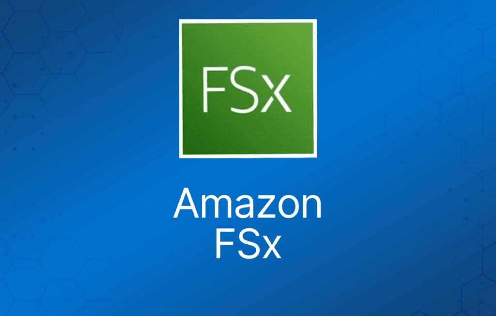

Amazon FSx 提供全托管的第三方文件系统。
Amazon FSx 让你获得第三方文件系统的原生兼容性，其功能集适用于 Windows 存储、高性能计算（HPC）、机器学习和电子设计自动化（EDA）等工作负载。
你无需担心文件服务器和存储的管理，因为 Amazon FSx 将硬件预置、软件配置、打补丁和备份等耗时的管理任务自动化了。
Amazon FSx 将文件系统与云原生 AWS 服务集成，使其适用于更广泛的工作负载。
Amazon FSx 提供四种文件系统供你选择：
- Amazon FSx for Windows File Server，面向基于 Windows 的应用
- Amazon FSx for Lustre，面向计算密集型工作负载。
- Amazon FSx for NetApp ONTAP。
- Amazon FSx for OpenZFS。
本文重点介绍 FSx for Windows File Server 和 FSx for Lustre，因为目前考试中只涉及这两种文件系统。
Amazon FSx for Windows File Server
FSx for Windows File Server 概述
Amazon FSx for Windows File Server 提供全托管的原生 Microsoft Windows 文件系统，让你能轻松地将需要共享文件存储的 Windows 应用迁移到 AWS。
基于 Windows Server 构建，Amazon FSx 提供你的 Microsoft 应用所依赖的兼容性和功能，包括对 SMB 协议、Windows NTFS 和 Microsoft Active Directory (AD) 集成的完整支持。
Amazon FSx 使用 SSD 存储，提供低延迟的快速性能。
这种兼容性、性能和可扩展性使其能支撑用户主目录、媒体工作流和业务应用等关键业务工作负载。
Amazon FSx 通过数据去重（Data Deduplication）帮助你优化 TCO，通用文件共享的成本可降低 50-60%。
用户配额（user quota）让你可以更好地监控和控制成本。你只需为实际使用的资源付费，没有预付费或许可费。
详情与优势
高可用性：Amazon FSx 会在文件系统所在的可用区（创建时指定）内自动复制你的数据，以保护其免受组件故障影响；持续监控硬件故障，并在发生故障时自动替换基础设施组件。
Multi-AZ：Amazon FSx 提供多可用区（AZ）部署选项，即使某个 AZ 不可用也能保证数据的持续可用。Multi-AZ 文件系统包含分别位于不同 AZ 的活动和备用文件服务器，写入文件系统磁盘的任何更改都会跨 AZ 同步复制到备用服务器。
支持 Windows 原生文件系统功能：
- 访问控制列表（ACL）、卷影副本（shadow copy）和用户配额。
- NTFS 文件系统，可通过 SMB 协议被多达数千个计算实例访问。
与 Microsoft Active Directory (AD) 配合，轻松将文件系统与 Windows 环境集成。
基于 SSD 存储构建，Amazon FSx 提供快速性能：每个文件系统吞吐量最高 2 GB/秒，数十万 IOPS，以及稳定的亚毫秒级延迟。
可以选择与文件系统大小无关的吞吐量级别。
使用 DFS Namespaces，你可以将性能扩展到每秒数十 GB 的吞吐量、数百万 IOPS，跨数百 PB 的数据。
Amazon FSx 可以将文件系统连接到 Amazon EC2、VMware Cloud on AWS、Amazon WorkSpaces 和 Amazon AppStream 2.0 实例。
Amazon FSx 还支持通过 AWS Direct Connect 或 AWS VPN 从本地访问，以及通过 VPC Peering 或 AWS Transit Gateway 从多个 VPC、账户和区域访问。
Amazon FSx 自动对静态数据和传输中数据进行加密。
经评估符合 ISO、PCI-DSS 和 SOC 认证，且符合 HIPAA 要求。
与 AWS CloudTrail 集成，监控并记录你的 API 调用，让你查看用户对 Amazon FSx 资源执行的操作。
只为实际使用的资源付费，无最低承诺或预付费用。
可以通过数据去重（Data Deduplication）移除冗余数据来优化成本。
用户配额提供存储消耗的跟踪、监控和强制执行，帮助降低成本。
Amazon FSx for Lustre
FSx for Lustre 概述
Amazon FSx for Lustre 提供针对快速处理工作负载优化的高性能文件系统，适用于机器学习、高性能计算（HPC）、视频处理、金融建模和电子设计自动化（EDA）等场景。
这些工作负载通常需要通过快速且可扩展的文件系统接口提供数据，数据集通常存储在 Amazon S3 等长期数据存储中。
Amazon FSx for Lustre 提供全托管的高性能 Lustre 文件系统，让基于文件的应用能够以每秒数百 GB 的数据、数百万 IOPS 和亚毫秒级延迟访问数据。
Amazon FSx 与 Amazon S3 原生配合，让你能将 S3 对象透明地作为 Amazon FSx 上的文件访问，运行持续数小时到数月的分析任务。
然后你可以将结果写回 S3，并直接删除文件系统。FSx for Lustre 还允许你通过 AWS Direct Connect 或 VPN 访问 FSx 文件系统，将数据处理工作负载从本地突发（burst）到 AWS。
你也可以将 FSx for Lustre 用作独立的高性能文件系统，将工作负载从本地突发到云端。
通过将本地数据复制到 FSx for Lustre 文件系统，你可以让运行在 AWS 上的计算实例快速处理这些数据。
元数据存储在元数据目标（Metadata Target，MST）上。
性能基于文件系统的大小。
详情与优势
Lustre 是为高性能工作负载设计的流行开源并行文件系统。这些工作负载包括 HPC、机器学习、分析和媒体处理。
并行文件系统为处理大量数据提供高吞吐量，并以持续低延迟执行操作。
它通过将数据存储在多台联网服务器上来实现这一点，数千个计算实例可以并发地与这些服务器交互。
Lustre 文件系统提供符合 POSIX 标准的文件系统接口。
Amazon FSx 可扩展到每秒数百 GB 的吞吐量和数百万 IOPS。
Amazon FSx 为处理大量数据提供高吞吐量，并以稳定的亚毫秒级延迟执行操作。
Amazon FSx for Lustre 支持数千个 EC2 实例的文件访问，让你能为基因组学、地震勘探和视频渲染等高性能工作负载提供文件存储。
Amazon S3：
- Amazon FSx 与 Amazon S3 原生配合，让你轻松访问 S3 数据来运行数据处理工作负载。
- 你的 S3 对象在文件系统中呈现为文件，你可以将结果写回 S3。
- 这让你可以在 FSx for Lustre 上运行数据处理工作负载，同时将长期数据存储在 S3 或本地数据存储中。
本地环境：
- 对于因峰值需求或容量限制需要突发到云端的本地工作负载，可以使用 Amazon FSx for Lustre。
- 要将现有本地数据迁移到 Amazon FSx，你可以通过 AWS Direct Connect 或 VPN 从本地客户端挂载 Amazon FSx for Lustre 文件系统，然后使用并行复制工具将数据导入 Amazon FSx for Lustre 文件系统。
- 你可以随时将结果写回，持久化存储在你的数据湖中。
安全：
- 所有 Amazon FSx 文件系统数据都进行静态加密。
- 你可以使用开源 Lustre 客户端从计算实例访问文件系统。
- 挂载后，你可以像操作本地文件系统一样处理文件系统中的文件和目录。
- FSx for Lustre 兼容最流行的 Linux AMI，包括 Amazon Linux、Red Hat Enterprise Linux (RHEL)、CentOS、Ubuntu 和 SUSE Linux。
- 你从 Amazon VPC 中的端点访问 Amazon FSx 文件系统，这让你能在自己的虚拟网络中隔离文件系统。
- 你可以配置 security group 规则，控制对 Amazon FSx 文件系统的网络访问。
- Amazon FSx 与 AWS Identity and Access Management (IAM) 集成。
- 该集成意味着你可以控制 AWS IAM 用户和组管理文件系统时可执行的操作（例如创建和删除文件系统）。
- 你还可以为 Amazon FSx 资源打标签，并基于这些标签控制 IAM 用户和组可执行的操作。
可以部署为 persistent（持久型）或 scratch（暂存型）。
Scratch（暂存型）
Scratch 专为短期或临时使用场景提供最佳性能。
不提供高可用或复制。
更大的文件系统需要更多服务器和磁盘（故障概率更高）。
发生硬件故障时自动修复。
最小大小为 1.2 TiB，以 2.4 TiB 为增量。
Persistent（持久型）
适合较长期的使用场景。
在一个 AZ 内提供高可用和自愈能力。
每 TiB 存储提供 50 MB/s、100 MB/s 和 200 MB/s 的吞吐量。
可突发至每 TiB 1,300 Mb/s（使用积分系统）。